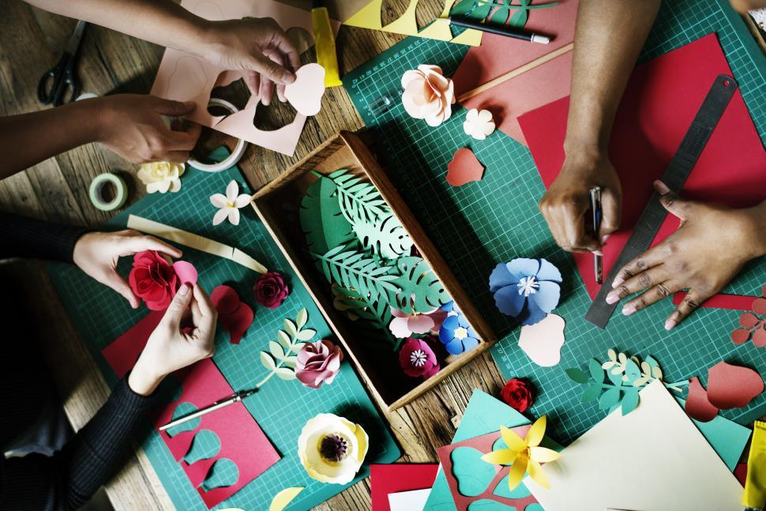
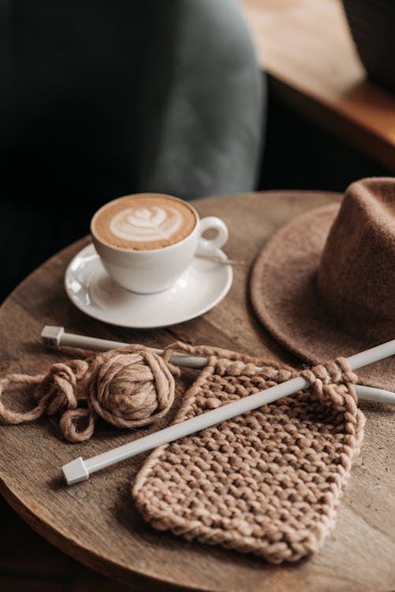

It all started after a long shift at work. Founder and CEO Sora Know grew bored of an ordinary evening watching TV, and decided to take up a new hobby. Hoping onto YouTube, she decovered the colorful and creative world of crochet. After purchasing her first hook and skein, she spent the rest of the night attempting to make her first chain. Gaining some practice, she started to challenge herself do more complex patterns and was made aware of just how large and appealing the community was. So Get Hooked was born, the collective online platform that would welcome any level of creative talent and encourage the pursuance of the crafts.
In the months since Get Hooked's debut, we've recruited over 100 different Masters of Craft, from all corners of the globe to teach, encourage, and become self sustaining entraprenuers. Everyday, Get Hooked strives to be the leader in equal accessibility of the arts, and have gone out of our way to partner with both national and local global orginzations to ensure anyone and everyone can learn and hone their crafting spirt. From organizing yarn dotations, to creating bandages for first responders, our crafters are what make a differece in the world around us.
Want to track our progress in how we're revolutionizing online crafting? Click on the link below to sign up for our monthly company report and achivements.